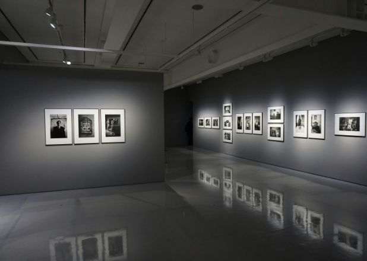

365일 불이 꺼지지 않는 곳
오늘도 대전복합터미널은
오늘도 대전복합터미널은
내일을 위한 만남을 준비합니다.
DTC Art Center
터미널에
터미널에
아트센터를 더하다
여행을 주제로 한 각기 다른 형태의 조형물들이 터미널 이용객들에게 아련한 옛 추억과 감동을 선사 전터미널시티의 현 주소와 가족여행을 통해 새로운 행복을 찾아가는 현대인들의 일상이 고스란히 녹아 있는 작품들을 함께 만나보자

DTC Art Center
대전터미널시티
대전터미널시티
인재육성 장학사업
기업이윤 사회 환원 경영철학을 실현하도록 기업의 사회공헌활동에 매진하고 있습니다. 설립자 故 이구열(李九烈)회장의 뜻을 계승, 실천하고 있는 (재)이구열 장학재단은現 이만희 회장에 의해 지역사회의 인재육성을 위한 장학 사업을 더욱 적극적으로 실천하고 있습니다.